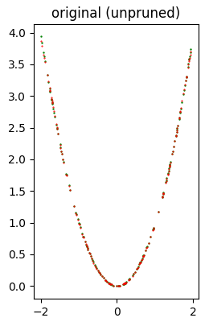
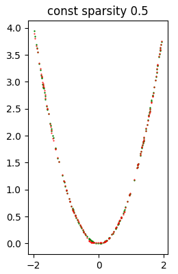
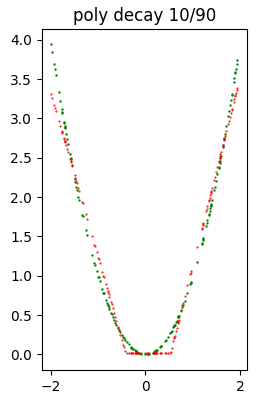
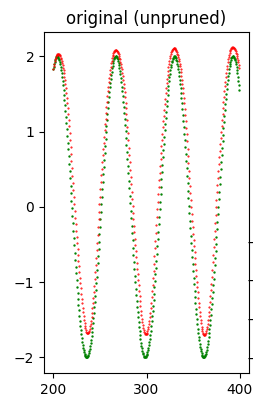
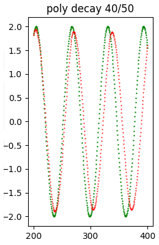
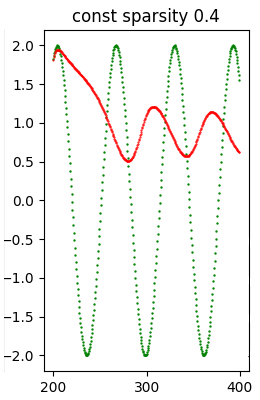

Pruning of neural networks with TensorFlow
The purpose of pruning of the weights based on magnitude is to gradually zero out the less significant weights of the model during the training phase
thus obtaining a certain degree of sparsity in the matrices of the weights (both kernel and bias).
For sparsity of a matrix it is intended the presence of elements equal to zero in the same matrix: more are present elements equal to zero
more the matrix has a greater degree of sparsity; a sparse matrix brings advantages in terms of memory occupation and computational.
As far as memory is concerned, it can be more easily compressed thanks to the presence of redundant elements (the zeros, in fact)
and this is the case treated in this post; in general, sparse arrays can also be stored in a different way from the traditional
NxM arrays, for example by storing in lists the non-zero values with their associated indexes, but this is not the case discussed in this post.
Regarding the computational aspects there could be some room for improvement as the multiplications with elements equal to zero
could be skipped, but also this case is not treated in this post, since here the focus is to realize the sparsity
of the matrices of weights in order to obtain greater compression in the face of a limited loss of quality of inference (the prediction) of the model itself.
The post presents a magnitude-based weight pruning solution implemented via the library
TensorFlow Model Optimization
and shows three examples of pruning applied to three different types of networks: a full-connected network (an MLP that performs a regression), a long-short-term-memory network
(an LSTM network that performs a time-series forecast) and a convolutional network (a CNN network that performs an image classifier).
The code described by this post requires version 3 of Python and uses TensorFlow 2.x technology (both CPU or GPU) with Keras (which is already integrated within TensorFlow 2);
requires in addition to the already mentioned TensorFlow Model Optimization other libraries such as NumPy, SkLearn, Pandas, MatPlotLib and TensorFlow Datasets.
To get the code please see the paragraph Download of the complete code at the end of this post.
The code of the solution
The heart of the proposed solution is the file trim_insignificant_weights.py
which implements two classes and some functions.
Classes are:
-
AttemptConfig: which is the element of a search grid (implemented by the examples shown later) that proceeds by attempts; this class implements two properties: the name of the attempt and the TensorFlow Model Optimization object that implements the pruning policy. Currently the supported policies are:PolynomialDecayandConstantSparsity. -
AttemptInfo: which implements a set of properties to store various information about a trained model. Precisely: the total number of weights, the number of weights equal to zero (and by difference those different from zero), the size of the original model saved in .h5, the size of the zipped .h5 file, the size of the .tflite file, the size of the zipped .tflite file with the relative compression coefficients and also other information regarding inference, such as predicted test values and the error between the predicted and expected values.
-
print_attempt_infos: takes as input a list of objects of typeAttemptInfo, obtained from the complete execution of the search grid, and writes on the standard output, in a user-friendly way, the information content of the various objectsAttemptInfopresent in the list. -
inspect_weigths: takes in input a keras model, inspects the weights (both kernel and bias) and writes on the standard output the number of weights for each layer of the model indicating how many of them are equal to zero and how many are different from zero. -
retrieve_size_of_model: takes in input a keras model and returns the size of the .h5 file that is obtained saving the model and the size of the same zipped file. -
retrieve_size_of_lite_model: takes as input a keras model and returns the size of the .tflite file that is obtained by converting and saving the model for TensorFlow Lite; also, as above, returns the size of the same zipped file. -
build_pruning_model: takes as input an original keras model (which has not undergone any pruning process) and returns a wrapper of the model by applying the methodprune_low_magnitudeto prepare the model to undergo a pruning process during the training phase. -
retrieve_callbacks_for_pruning: returns the callbackUpdatePruningStepneeded for the pruning training phase. -
extract_pruned_model: takes as input a wrapper for pruning a model and removes the wrapper, viastrip_pruningand returns the underlying model that results ready for inference.
The examples
The examples shown in this post all follow the same pattern: the example code prepares a dataset (which is generated synthetically in examples #1 and #2,
while in example #3 a dataset of TensorFlow Datasets is used,
which is divided into two pieces: one for training and the other for testing (sometimes there is a third piece for validation);
then a neural network model is built and a training process is performed.
This model is named original model and information about it is placed in an instance of the class AttemptInfo.
At this point the search grid is created, which is a list of instances of the classes PolynomialDecay and ConstantSparsity
initialized differently; each configuration is stored in an instance of AttemptConfig.
The code in the example loops over the search grid and for each AttemptConfig creates a wrapper for pruning the original template
by calling the function build_pruning_model and trains this model, using the same hyper-parameters as the training of the original model
but with an extra callback obtained by calling retrieve_callbacks_for_pruning.
During training, the model undergoes a process of pruning; once training is over, the function extract_pruned_model is called
function to remove the wrapper and obtain the underlying model on which the inference of the test data is performed
and finally we store in a new instance of AttemptInfo all the information about that model, in particular the size of the zipped .h5 file
and the size of the zipped .tflite file and the error calculated by comparing the prediction on the test data and the real test values.
The various instances of AttemptInfo are collected in a list and at the end of the sample script the information from the various attempts is displayed
of the various attempts to allow you to compare the compression factor obtained for each attempt against how much loss in model quality.
For examples #1 and #2 a Cartesian graph with two curves is also shown for each attempt: in green the test dataset, in red the prediction of the current attempt
and this gives an insight into the loss of quality as the pruning activity increases.
Example #1: full-connected neural network
The code for this example is the file example1.py.
The dataset used by this example is a synthetic dataset generated as follows:
fx_gen_ds = lambda x: x**2 #generating function of the dataset
x_dataset = np.arange(-2., 2, 0.005, dtype=float)
y_dataset = fx_gen_ds(x_dataset)To execute this Python scripy run the following command:
$ python example1.pyDense layer, with a total of 4289 trainable weights.Here is the network structure:
Model: "mlp_regression_model"
_________________________________________________________________
Layer (type) Output Shape Param #
=================================================================
input_1 (InputLayer) [(None, 1)] 0
_________________________________________________________________
dense (Dense) (None, 32) 64
_________________________________________________________________
dense_1 (Dense) (None, 64) 2112
_________________________________________________________________
dense_2 (Dense) (None, 32) 2080
_________________________________________________________________
dense_3 (Dense) (None, 1) 33
=================================================================
Total params: 4,289
Trainable params: 4,289
Non-trainable params: 0
_________________________________________________________________Adams
and MeanSquaredError as loss function. The properties of this model (which we call original model because it is not pruned)
are visible in the output of the program:Model: original (unpruned)
Total number of weights: 4289
Total number of non-zero weights: 4280
Total number of zero weights: 9
Unzipped h5 size: 37272 bytes
Zipped h5 size: 18155 bytes (compression factor: 51.29%)
Unzipped tflite size: 7232 bytes
Zipped tflite size: 5781 bytes (compression factor: 20.06%)
Error (loss) value: 1.379212E-04The following image shows at a glance that the quality of inference is very good.

Test dataset (in green) and inference (in red) produced with the original model (which has not undergone any pruning).
Then follows the execution of the search grid that performs 11 attempts of pruning application, 6 with
PolynomialDecay variously initialized
and 5 with ConstantSparsity variously initialized. As a sample, we show the result of one of the 11 attempts, precisely const sparsity 0.5.
(however, the results of all attempts are available in the standard output):Model: const sparsity 0.5
Total number of weights: 4289
Total number of non-zero weights: 1775
Total number of zero weights: 2514
Unzipped h5 size: 37272 bytes
Zipped h5 size: 10832 bytes (compression factor: 70.94%)
Unzipped tflite size: 7232 bytes
Zipped tflite size: 2953 bytes (compression factor: 59.17%)
Error (loss) value: 3.109528E-04The following image shows at a glance that the quality of inference is quite good.

Test dataset (in green) and inference (in red) produced with the const sparsity 0.5 model.
When all attempts are finished, the example script shows the recap of all attempts; the first element of the recap is relative to the original model.
*** Final recap ***
Attempt name Size h5 (Comp. %) Error (loss)
original (unpruned) 18155 ( 51.29%) 1.379212e-04
poly decay 10/50 11958 ( 67.92%) 1.981978e-03
poly decay 20/50 11928 ( 68.00%) 9.621178e-05
poly decay 30/60 10544 ( 71.71%) 2.460897e-04
poly decay 30/70 9039 ( 75.75%) 2.291273e-03
poly decay 40/50 12254 ( 67.12%) 8.707970e-05
poly decay 10/90 5782 ( 84.49%) 3.172360e-02
const sparsity 0.1 10858 ( 70.87%) 5.406314e-04
const sparsity 0.4 10856 ( 70.87%) 4.125351e-04
const sparsity 0.5 10832 ( 70.94%) 3.109528e-04
const sparsity 0.6 10476 ( 71.89%) 2.269561e-04
const sparsity 0.9 5792 ( 84.46%) 9.419761e-04
Dataset di test (in verde) e inferenza (in rosso) prodotta con il modello poly decay 10/90.
Note: Given the stochastic nature of the training phase, your specific results may vary. Consider running the example a few times.
Example #2: long-short-term-memory neural network
The code for this example is the file example2.py.
The dataset used by this example is a synthetic time series generated as follows:
ft_gen_ts = lambda t: 2.0 * np.sin(t/10.0) #generating function of the time series
t_train = np.arange(0, 200, 0.5, dtype=float)
y_train_timeseries = ft_gen_ts(t_train)
t_test = np.arange(200, 400, 0.5, dtype=float)
y_test_timeseries = ft_gen_ts(t_test)To execute this Python scripy run the following command:
$ python example2.pyHere is the network structure:
Model: "long_short_term_memory_model"
_________________________________________________________________
Layer (type) Output Shape Param #
=================================================================
input_1 (InputLayer) [(None, 6, 1)] 0
_________________________________________________________________
lstm (LSTM) (None, 80) 26240
_________________________________________________________________
dense (Dense) (None, 1) 81
=================================================================
Total params: 26,321
Trainable params: 26,321
Non-trainable params: 0
_________________________________________________________________Adams and MeanSquaredError as loss function.
The properties of this model (which we call original model because it is not pruned)
are visible in the output of the program:Model: original (unpruned)
Total number of weights: 26321
Total number of non-zero weights: 26321
Total number of zero weights: 0
Unzipped h5 size: 122096 bytes
Zipped h5 size: 99952 bytes (compression factor: 18.14%)
Unzipped tflite size: 42480 bytes
Zipped tflite size: 29678 bytes (compression factor: 30.14%)
Error (loss) value: 1.289916E-01The following image shows at a glance that the quality of the forecast is good.

Test dataset (in green) and forecast (in red) produced with the original model (which did not undergo any pruning).
Then follows the execution of the search grid that performs 11 attempts of pruning application, 6 with
PolynomialDecay variously initialized
and 5 with ConstantSparsity variously initialized. As a sample, we show the result of one of the 11 attempts, precisely poly decay 40/50.
(however the results of all attempts are available in the standard output):Model: poly decay 40/50
Total number of weights: 26321
Total number of non-zero weights: 13322
Total number of zero weights: 12999
Unzipped h5 size: 122096 bytes
Zipped h5 size: 63464 bytes (compression factor: 48.02%)
Unzipped tflite size: 42480 bytes
Zipped tflite size: 21277 bytes (compression factor: 49.91%)
Error (loss) value: 8.439505E-01The following image shows at a glance that the quality of the forecast is relatively good.

Test dataset (in green) and the forecast (in red) produced with the poly decay 40/50 model.
When all attempts are finished, the example script shows the recap of all attempts; the first element of the recap is relative to the original model.
*** Final recap ***
Attempt name Size h5 (Comp. %) Error (loss)
original (unpruned) 99952 ( 18.14%) 1.289916e-01
poly decay 10/50 62316 ( 48.96%) 8.029442e-01
poly decay 20/50 62268 ( 49.00%) 1.122432e-01
poly decay 30/60 53409 ( 56.26%) 2.103334e+00
poly decay 30/70 43866 ( 64.07%) 3.067956e+00
poly decay 40/50 63464 ( 48.02%) 8.439505e-01
poly decay 10/90 22154 ( 81.86%) 4.263138e+00
const sparsity 0.1 96429 ( 21.02%) 2.983370e+00
const sparsity 0.4 72670 ( 40.48%) 3.378339e+00
const sparsity 0.5 63657 ( 47.86%) 3.714817e-01
const sparsity 0.6 54506 ( 55.36%) 4.406884e+00
const sparsity 0.9 22818 ( 81.31%) 4.847150e+00As a sample the following image shows a model that has undergone a heavy pruning and consequently the quality of the inference has notably worsened regarding the model previously shown.

Test dataset (in green) and forecast (in red) produced with the const spartsity 0.4 model.
Note: Given the stochastic nature of the training phase, your specific results may vary. Consider running the example a few times.
Example #3: convolutional neural network
The code for this example is the file example3.py.
The dataset used by this example is the dataset Flowers of TensorFlow;
here is the code that performs the download of that dataset:
(train_ds, val_ds, test_ds), metadata = tfds.load(
'tf_flowers',
split=['train[:80%]', 'train[80%:90%]', 'train[90%:]'],
with_info=True,
as_supervised=True,
)
total_number_of_training_images = 8
total_number_of_validation_images = 6
total_number_of_test_images = 7$ python example3.pyIn the output obtained, right at the beginning, we see the structure of the model, which is a network with a series of Conv2D and MaxPooling2D layers followed by a Dense layer, then a Flatten, then a Dropout (to avoid overfitting) and finally a Dense; has with a total of 1658565 trainable weights.
Here is the structure of the network:
Model: "cnn_model"
_________________________________________________________________
Layer (type) Output Shape Param #
=================================================================
input_1 (InputLayer) [(None, 180, 180, 3)] 0
_________________________________________________________________
conv2d (Conv2D) (None, 178, 178, 32) 896
_________________________________________________________________
max_pooling2d (MaxPooling2D) (None, 89, 89, 32) 0
_________________________________________________________________
conv2d_1 (Conv2D) (None, 87, 87, 32) 9248
_________________________________________________________________
max_pooling2d_1 (MaxPooling2 (None, 43, 43, 32) 0
_________________________________________________________________
conv2d_2 (Conv2D) (None, 41, 41, 32) 9248
_________________________________________________________________
max_pooling2d_2 (MaxPooling2 (None, 20, 20, 32) 0
_________________________________________________________________
flatten (Flatten) (None, 12800) 0
_________________________________________________________________
dense (Dense) (None, 128) 1638528
_________________________________________________________________
dropout (Dropout) (None, 128) 0
_________________________________________________________________
dense_1 (Dense) (None, 5) 645
=================================================================
Total params: 1,658,565
Trainable params: 1,658,565
Non-trainable params: 0
_________________________________________________________________Adams and SparseCategoricalCrossentropy(from_logits=True) as loss function.
Note: The error value shown in the output of the program however is not the value of the loss function obtained by comparing the test dataset with the prediction,
as it was for examples #1 and #2, but is the number of correctly classified images divided by the total number of images in the test dataset.The properties of this model (which we call the original model because it is not pruned) are visible in the output of the program:
Model: original (unpruned)
Total number of weights: 1658565
Total number of non-zero weights: 1658565
Total number of zero weights: 0
Unzipped h5 size: 6665816 bytes
Zipped h5 size: 6151486 bytes (compression factor: 7.72%)
Unzipped tflite size: 1669728 bytes
Zipped tflite size: 1358843 bytes (compression factor: 18.62%)
Error (loss) value: 3.950954E-01Then follows the execution of the search grid that performs 11 attempts of pruning application, 6 with
PolynomialDecay variously initialized
and 5 with ConstantSparsity variously initialized. As a sample, we show the result of one of the 11 attempts, precisely poly decay 40/50.
(however the results of all attempts are available in the standard output):Model: poly decay 40/50
Total number of weights: 1658565
Total number of non-zero weights: 829624
Total number of zero weights: 828941
Unzipped h5 size: 6665816 bytes
Zipped h5 size: 3859572 bytes (compression factor: 42.10%)
Unzipped tflite size: 1669728 bytes
Zipped tflite size: 978984 bytes (compression factor: 41.37%)
Error (loss) value: 4.087193E-01When all attempts are finished, the example script shows the recap of all attempts; the first element of the recap is relative to the original model.
*** Final recap ***
Attempt name Size h5 (Comp. %) Error (loss)
original (unpruned) 6151486 ( 7.72%) 3.950954e-01
poly decay 10/50 3781226 ( 43.27%) 4.223433e-01
poly decay 20/50 3786548 ( 43.19%) 4.168937e-01
poly decay 30/60 3238918 ( 51.41%) 4.523161e-01
poly decay 30/70 2602091 ( 60.96%) 4.441417e-01
poly decay 40/50 3859572 ( 42.10%) 4.087193e-01
poly decay 10/90 1286371 ( 80.70%) 4.741144e-01
const sparsity 0.1 5891419 ( 11.62%) 4.604905e-01
const sparsity 0.4 4400747 ( 33.98%) 4.386921e-01
const sparsity 0.5 3830963 ( 42.53%) 4.414169e-01
const sparsity 0.6 3246370 ( 51.30%) 4.441417e-01
const sparsity 0.9 1285383 ( 80.72%) 4.659401e-01Note: Given the stochastic nature of the training phase, your specific results may vary. Consider running the example a few times.
Download of the complete code
The complete code is available at GitHub.
These materials are distributed under MIT license; feel free to use, share, fork and adapt these materials as you see fit.
Also please feel free to submit pull-requests and bug-reports to this GitHub repository or contact me on my social media channels available on the top right corner of this page.